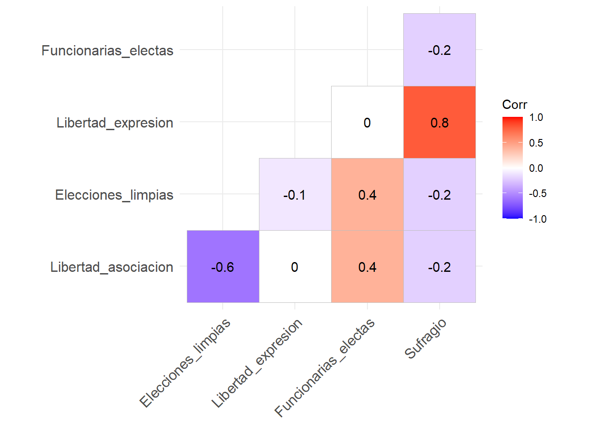

Capítulo 3 Imputación de Datos Faltantes
La ausencia de datos puede abordarse de dos maneras: eliminando las observaciones con datos faltantes o aplicando técnicas de imputación para estimar los valores ausentes. Esta sección se centra en métodos de imputación que permiten utilizar todos los casos disponibles en el conjunto de datos.
Durante esta práctica, aplicaremos la imputación por la media para datos continuos con una distribución uniforme y la moda para datos categóricos. También aplicaremos métodos de regresión lineal y logística para estimar los valores faltantes, basándonos en relaciones observadas entre las variables.
Es importante mencionar que cada método de imputación tiene sus propias fortalezas y limitaciones y debe elegirse con cuidado, teniendo en cuenta la naturaleza de los datos y el patrón de datos faltantes.
3.1 Imputación por Media y Moda
Para datos númericos que siguen una distribución normal, la imputación se puede realizar empleado la media que sustituye los valores faltantes con la media aritmética de las observaciones disponibles.
En el caso de los datos categóricos, la imputación se puede realizar empleando la moda, que es el valor más frecuente en el conjunto de datos.
En el siguiente código de R, utilizamos la función mean para calcular la media de la variable cuantitativa Libertad_asociacion, excluyendo los valores NA con el argumento na.rm = TRUE. De manera similar, calculamos la moda para la variable categórica Sufragio usando la función Mode de la librería DescTools. Estos valores calculados se utilizan para sustituir los datos faltantes en el conjunto de datos datos_IST.
# Librería para calcular la moda
library(DescTools)
# Calcular la media de Libertad_asociacion
media_libertad_asociacion <- mean(datos_IST$Libertad_asociacion, na.rm = TRUE)
# Calcular la moda de Sufragio
moda_sufragio <- Mode(datos_IST$Sufragio, na.rm = TRUE)
# Imputación de Libertad_asociacion con la media y Sufragio con la moda
datos_IST_imputados_1 <- datos_IST
datos_IST_imputados_1$Libertad_asociacion[is.na(datos_IST_imputados_1$Libertad_asociacion)] <- media_libertad_asociacion
datos_IST_imputados_1$Sufragio[is.na(datos_IST_imputados_1$Sufragio)] <- moda_sufragio| Planeta | Libertad_asociacion | Elecciones_limpias | Libertad_expresion | Funcionarias_electas | Sufragio |
|---|---|---|---|---|---|
| Vulcano | 0.2875775 | 96.11500 | 0.9182971 | 0 | 1 |
| Tierra | 0.7883051 | 50.80007 | 0.7716339 | 1 | 1 |
| Romulus | 0.4089769 | 70.98136 | 0.6814045 | 0 | 1 |
| Kronos | 0.8830174 | 61.53701 | 1.0000000 | 1 | 1 |
| Cardassia | 0.4936986 | 19.26322 | 0.7497525 | 1 | 1 |
| Ferenginar | 0.0455565 | 90.98425 | 0.7130861 | 0 | 1 |
| Bajor | 0.5281055 | 32.14790 | 0.5968766 | 0 | 1 |
| Betazed | 0.4936986 | 13.78536 | 0.6833839 | 0 | 1 |
| Trill | 0.5514350 | 39.51286 | 0.3443032 | 0 | 0 |
| Qo’noS | 0.4566147 | 95.90533 | 0.1927751 | 1 | 0 |
3.2 Imputación por Modelos de Regresión
La regresión lineal puede emplearse para predecir y reemplazar datos faltantes cuando existe una relación lineal entre variables. Este método presupone que los datos faltan al azar, lo que implica que la ausencia de datos está asociada únicamente con variables observables y no con los valores faltantes.
Además de asumir el azar en los datos faltantes, los modelos de regresión presuponen una distribución normal de los residuos. Estos modelos se pueden adaptar para datos continuos, discretos y categóricos (mediante modelos logit o probit).
Para identificar la mejor variable predictora, se recomienda realizar un análisis de correlación que permita detectar la correlación más fuerte. En este manual se ilustran con la regresión lineal simple y regresión logística simple, sin embargo, si se observan más variables con correlaciones altas, también es posible aplicar modelos de regresión múltiple.
En el siguiente código de R, utilizamos la función cor para calcular las correlaciones de Spearman y visualizamos la matriz de correlación usando ggcorrplot.
library(ggcorrplot)
# Correlación de Spearman para variables continuas y dicotómicas
correlaciones <- cor(datos_IST[, c("Libertad_asociacion",
"Elecciones_limpias",
"Libertad_expresion",
"Funcionarias_electas",
"Sufragio")],
method = "spearman", use = "complete.obs")%>% round(1)
ggcorrplot(correlaciones,type="lower",lab=T,show.legend=T)
Seleccionamos Elecciones_limpias para imputar valores en Libertad_asociacion en una regresión lineal, utilizando la función lm. Esta decisión de basa en la correlación moderada de -0.6 entre ambas variables.
# Modelo lm
datos_IST_imputados_2 <- datos_IST
modelo_libertad <- lm(Libertad_asociacion ~ Elecciones_limpias, data = datos_IST_imputados_2, na.action = na.exclude)
# Predecir los valores faltantes de Libertad_asociacion
predicciones_libertad <- predict(modelo_libertad, newdata = datos_IST)
# Imputar los valores predichos
datos_IST_imputados_2$Libertad_asociacion[is.na(datos_IST_imputados_2$Libertad_asociacion)] <- predicciones_libertad[is.na(datos_IST_imputados_2$Libertad_asociacion)]| Planeta | Libertad_asociacion | Elecciones_limpias | Libertad_expresion | Funcionarias_electas | Sufragio |
|---|---|---|---|---|---|
| Vulcano | 0.2875775 | 96.11500 | 0.9182971 | 0 | NA |
| Tierra | 0.7883051 | 50.80007 | 0.7716339 | 1 | NA |
| Romulus | 0.4089769 | 70.98136 | 0.6814045 | 0 | 1 |
| Kronos | 0.8830174 | 61.53701 | 1.0000000 | 1 | 1 |
| Cardassia | 0.7882354 | 19.26322 | 0.7497525 | 1 | 1 |
| Ferenginar | 0.0455565 | 90.98425 | 0.7130861 | 0 | 1 |
| Bajor | 0.5281055 | 32.14790 | 0.5968766 | 0 | 1 |
| Betazed | 0.8218593 | 13.78536 | 0.6833839 | 0 | 1 |
| Trill | 0.5514350 | 39.51286 | 0.3443032 | 0 | 0 |
| Qo’noS | 0.4566147 | 95.90533 | 0.1927751 | 1 | 0 |
Para imputar Sufragio elegimos Libertad_expresion como predictor en la regresión logística, utilizando la función glm. Esta decisión se basa en la correlación de 0.8 entre ambas variables.
# Modelo glm
datos_IST_imputados_3 <- datos_IST_imputados_2
modelo_sufragio <- glm(Sufragio ~ Libertad_expresion, family = binomial, data = datos_IST_imputados_3, na.action = na.exclude)
# Predecir los valores faltantes de Sufragio
predicciones_sufragio <- predict(modelo_sufragio, newdata = datos_IST[is.na(datos_IST_imputados_2$Sufragio), ], type = "response")
# Imputar los valores predichos
datos_IST_imputados_3$Sufragio[is.na(datos_IST_imputados_3$Sufragio)] <- ifelse(predicciones_sufragio > 0.5, 1, 0)| Planeta | Libertad_asociacion | Elecciones_limpias | Libertad_expresion | Funcionarias_electas | Sufragio |
|---|---|---|---|---|---|
| Vulcano | 0.2875775 | 96.11500 | 0.9182971 | 0 | 1 |
| Tierra | 0.7883051 | 50.80007 | 0.7716339 | 1 | 1 |
| Romulus | 0.4089769 | 70.98136 | 0.6814045 | 0 | 1 |
| Kronos | 0.8830174 | 61.53701 | 1.0000000 | 1 | 1 |
| Cardassia | 0.7882354 | 19.26322 | 0.7497525 | 1 | 1 |
| Ferenginar | 0.0455565 | 90.98425 | 0.7130861 | 0 | 1 |
| Bajor | 0.5281055 | 32.14790 | 0.5968766 | 0 | 1 |
| Betazed | 0.8218593 | 13.78536 | 0.6833839 | 0 | 1 |
| Trill | 0.5514350 | 39.51286 | 0.3443032 | 0 | 0 |
| Qo’noS | 0.4566147 | 95.90533 | 0.1927751 | 1 | 0 |
3.3 Paquete Amelia
incompleto Amelia aplica la imputación múltiple utilizando el enfoque Expectation-Maximization with Bootstrapping (EMB). Este procedimiento crea múltiples conjuntos de datos completos, permitiendo la representación de la incertidumbre en las estimaciones de parámetros resultantes de la imputación (J. Honaker 2011).
Amelia es útil en conjuntos de datos con variables de diversos tipos, como continuas, discretas y categóricas. Al igual que con los modelos de regresión, Amelia asume que los datos faltan al azar.